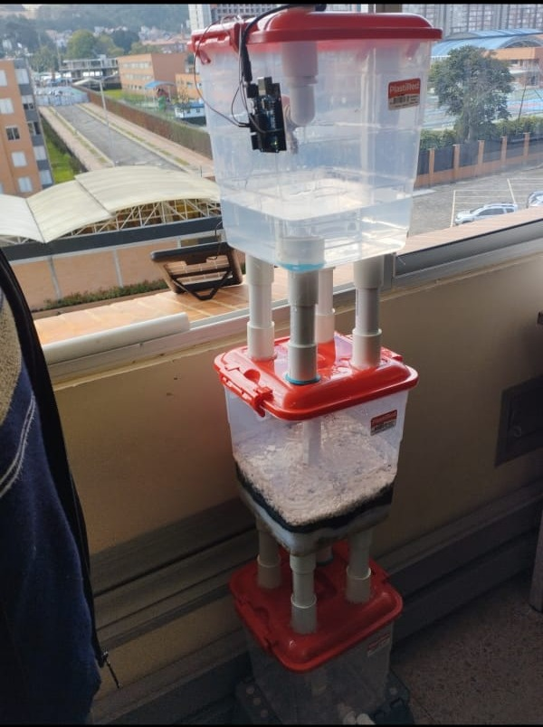

Bienvenido a HydroCycle
Sistema ecológico de reutilización y tratamiento de aguas grises diseñado para promover la sostenibilidad ambiental mediante tecnologías accesibles y automatizadas.
Descripción del prototipo
El prototipo HydroCycle fue diseñado con el propósito de reutilizar aguas grises provenientes de lavamanos o duchas mediante un sistema modular, ecológico y automatizado, capaz de filtrar, almacenar y redistribuir el agua tratada para usos no potables.
Funcionamiento general del sistema
HydroCycle es un sistema práctico, ecológico y accesible diseñado para capturar, filtrar y reutilizar aguas grises provenientes de duchas y lavamanos en entornos domésticos o comunitarios.
El prototipo utiliza depósitos apilables conectados mediante un sistema de filtración por capas que permite reducir impurezas, malos olores y partículas sólidas presentes en el agua residual.
Además, incorpora sensores de nivel y un sistema automatizado de control de flujo que permite supervisar el proceso de forma autónoma, reduciendo la necesidad de intervención humana.
El sistema funciona mediante energía solar gracias a un panel fotovoltaico integrado, permitiendo un funcionamiento independiente eléctricamente y garantizando un bajo consumo energético.
El agua tratada puede reutilizarse en diferentes actividades no potables:
- Riego de jardines y plantas
- Limpieza de pisos y exteriores
- Descarga de sanitarios
- Lavado de herramientas y superficies

Captación
El sistema recolecta aguas grises provenientes de lavamanos o duchas y las dirige hacia un tanque superior donde comienza el proceso de tratamiento.
Filtrado
El agua atraviesa varias capas filtrantes compuestas por arena, grava, carbón activado y materiales porosos capaces de eliminar impurezas, sólidos y malos olores.
Almacenamiento y control
El agua tratada se almacena en un depósito inferior equipado con sensores y válvulas automáticas que permiten controlar los niveles y distribuir el agua reutilizable eficientemente.
Cómo se construyó
El sistema se elaboró a partir de materiales reutilizables y de bajo costo, priorizando la accesibilidad y la sostenibilidad ambiental.
Su estructura principal se compone de tres contenedores plásticos apilados que representan las etapas del tratamiento del agua.
Tanque superior
Recibe el agua gris desde una fuente doméstica y contiene un filtro primario para retener impurezas grandes.
Tanque intermedio
Incluye capas de arena, grava, carbón activado y esponja sintética para eliminar olores, turbidez y partículas finas.
Puede incorporar sensores o módulos Arduino.
Tanque inferior
Almacena el agua ya filtrada lista para reutilizarse en limpieza, riego o sanitarios.
Incluye válvula de salida para controlar el flujo.